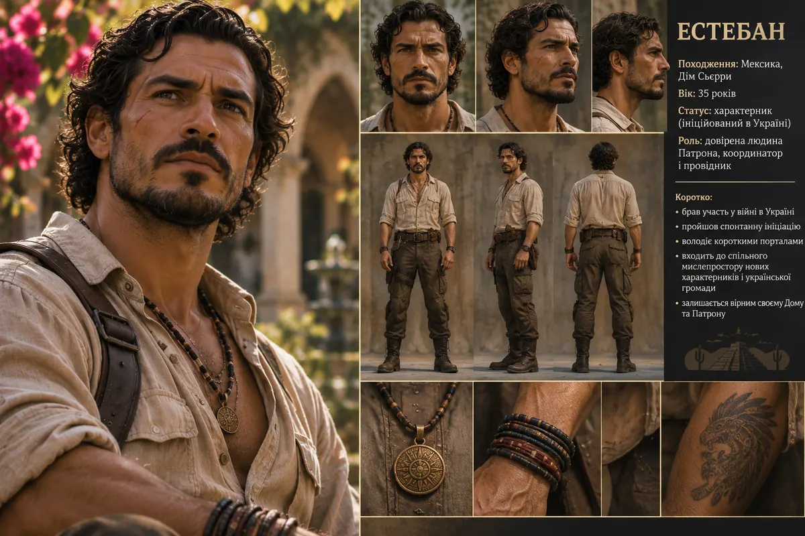

ІСТОРІЯ
Війна в Україні та ініціація
На початку повномасштабної війни представники кількох мексиканських угруповань почали прибувати до України різними групами. Частина з них називала себе найманцями. Їхні керівники прагнули отримати реальний бойовий досвід — навчитися діяти в умовах сучасної війни, під постійною загрозою безпілотників та артилерії, опанувати розвідку й взаємодію підрозділів.
Естебан був серед тих, хто вирішив залишатися в Україні, доки міг бути корисним. Спочатку він воював як звичайний боєць. Уже під час перебування в Україні пережив спонтанну ініціацію. Він не планував ставати характерником і спершу не відразу зрозумів, що з ним відбувається.
Після ініціації в нього проявилася здатність відкривати короткі портали між двома точками одного плану. Згодом він учився контролювати переходи й розуміти межі власних можливостей. Також опинився в спільному мислепросторі нових характерників, незалежно від їхнього походження та колишньої належності до різних Домів.
СТОСУНКИ ТА ПОЗИЦІЯ
Вірність своєму Домові
Повернувшись до Дому Сьєрри, Естебан не відмовився від свого походження й не перестав бути людиною Патрона. Він поважає його авторитет, але водночас підтримує зв'язок із новою спільнотою характерників.
Естебан пояснює, що ініційовані в Україні люди з різних мексиканських Домів тепер можуть постійно спілкуватися, обмінюватися інформацією та координувати спільні справи. Це не скасувало самостійності Домів і не створило єдиного керівного органу: кожен Патрон зберігає владу у власному Домі.
Він сумує за побратимами, з якими воював в Україні; не всі з них повернулися. Водночас вважає, що тепер може допомагати своєму Домові не лише зброєю та військовим досвідом, а й новими здібностями та зв'язками.
ПАТЕРН ПЕРСОНАЖА
Візуальні характеристики
Зовнішність та одяг
35 років. Темне кучеряве волосся, вуса й коротка борода. Практичний світлий одяг, шкіряні ремені та браслети; на руці зображене татуювання. На шиї — медальйон на намисті. Ці деталі взяті з погодженого візуального образу, а не з опису в сюжетному тексті.
Канон і походження відомостей
Сюжетні відомості звірені з третьою наданою книгою, зокрема з фрагментом «Алісія-02. Дім Сьєрри». Вік, зовнішність, одяг, медальйон і татуювання зафіксовані за візуальним патерном. У книзі не вказано точного віку Естебана.